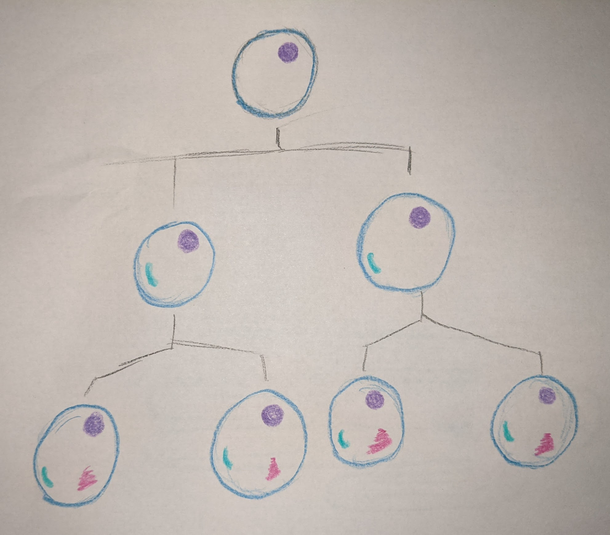
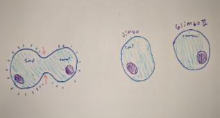

Body System Interactions

Function
The cardiovascular system
transports oxygen, nutrients,
hormones, and celluar waste
throughout the body. It does this
through the use of blood cells,
blood, the heart, veins, and
arteries. Blood
cells carry oxygen, veins carry
deoxygenated blood to the
heart, arteries carry oxygenated
blood, and the heart physically
pumps the blood throughout the
body.
Hierarchy
Cells: red blood, white blood,
platelets, plasma, endothelial,
smooth muscle
Tissues: blood, cardiomyocytes,
connective, endothelium,
epithelial
Organs: heart, veins, arteries,
capillaries
-muscles inside the heart allow it to pump
-skeletal muscles assist veins in returning
blood to heart
-cardiovascular system supplies muscles
and tissues with the required
nutrients/resources to stay healthy
Without the muscular system, the
cardiovascular system wouldn't be able to
pump blood, and without the cardiovascular
system, the muscular system wouldn't
recieve the resources needed to function.

Function
The muscular system is responisble for the movement of the body through visceral, cardiac, and skeletal muscles. Visceral muscles are found inside organs and are the weakest of all muscles, contracting and moving substances through the organ unconsciously. Cardiac muscles are only in the heart, and allow it to pump blood. These muscles are unconcious and very strong.
Hierarchy
Cells: cardiac, skeletal, smooth/visceral
Tissues: cardiac, skeletal, smooth/visceral
Organs: all muscles (700 named)
The images shown are very simplistic and
don't go very in depth at all. The
cardiovascular system has many more
smaller blood vessels than the ones
depicted. Same with the muscular system,
there are many more muscles than the ones
shown. Both images also lack 100%
accuracy of position and shape of items in
the system. The muscles don't look exactly
like the ones in the picture, and the simplicity
of the pictures itself makes it impossible
to completely accurately depict the systems.


Cell differentiation is the proccess of
one cell (typically less specialized) to
another type of cell (typicaly more
specialized). This is often done through
stem cells, which hold DNA directions
for becoming any type of cell. One of
the first parts of the body these stem
cells form is the heart, but they
eventually turn into everything that
makes up your body, as some
specialize to become muscle cells,
bone cells, blood cells, etc. The cells
know what to turn into based off of their
epeigenetic marks, which are
influenced by envionment factos.
Cell division is the process of one cell dividng/cloning itself into two new cells for the purpose of growth, repair, or replacement. However, some cells do not divide. The cardiac cells inside the heart cannot undergo mitosis and neither can blood cells, as they are created in bone marrow. However, cell division does occur in the muscular system as we grow during childhood and in satellite cells to repair/grow muscle.
- How often do skeletal muscle cells go through mitosis. UCSB Science Line. (n.d.). Retrieved October 1, 2021, from http://scienceline.ucsb.edu/getkey.php?key=5873.
- Explore human anatomy, physiology, and Genetics. Innerbody. (n.d.). Retrieved October 1, 2021, from https://www.innerbody.com/htm/body.html.